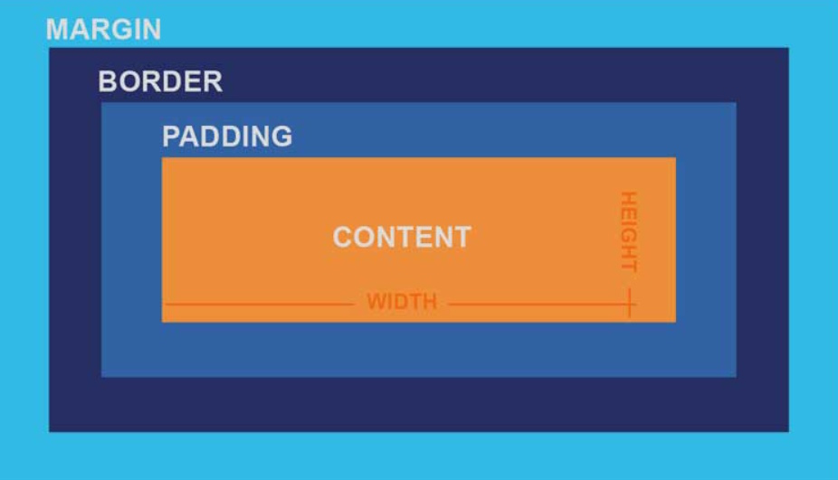

Last visit:
nb of visits:
Tutorial: ⏭
HTML - Continue here with "Character references: including special characters in HTML"
CSS - Continue here with CSS styling basics"
Playground: Click here
The list below is ordered (numbered)
Example of an unordered list (bulleted)
This list has both ordered and unordered items
CSS is a style sheet language. It allows you to change the aspect of HTML elements.
The whole structure is called a ruleset (or rule).
Most HTML elements can be thought of as boxes.
JavaScript is the programming language that adds interactivity and dynamic behavior to an HTML document, transforming a static page into a responsive user experience.
While HTML defines the structure and CSS handles the styling, JavaScript provides the "brain" by allowing the page to:
A modern way of linking an external JavaScript file is to place the
<script> element in the
<head> section and use the
defer or
async attribute to prevent blocking HTML parsing.
Use defer for scripts that depend on the DOM or when execution order matters.
Use async otherwise (for independent scripts).
But in modern application code, the preferred approach is to use type="module".
Module scripts are deferred by default, execute after HTML parsing, preserve execution order, and support import/export, making them cleaner and better structured.
async remains useful for independent third-party scripts (analytics, ads), and defer is still relevant for classic (non-module) scripts that rely on the DOM.
Example using 'type=module', to be added at the end of the <head> section:
<script type="module" src="app.js" ></script>
The steps to publish a site via Github are as follow:
| ⏳ | Wait for one or two minutes |
A new URL appears in the page
Use MathML (Mathematical Markup Language) to use mathematical notation.
The fraction is not a decimal number.
For more information, see here on MDN.
Information about version control using Git and GitHub is available here on MDN.